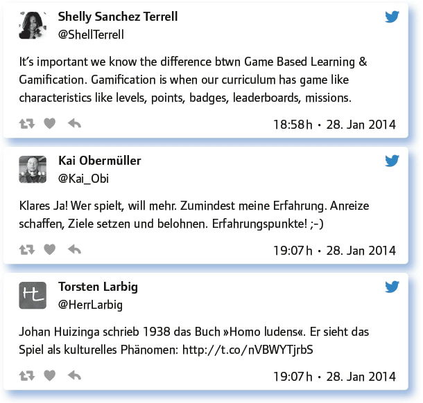
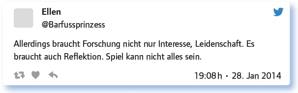
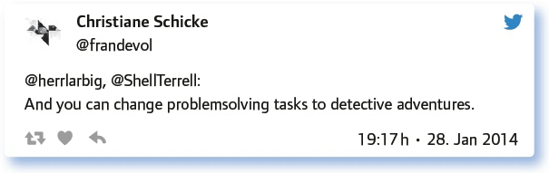

von André J. Spang
Gamification im Unterricht? Was bedeutet das? Elemente, die man von Spielen her kennt, in den Unterricht und den Lernprozess zu integrieren – kann das funktionieren?
Bei der Gamifizierung von Unterricht werden spieltypische Elemente, also High Score Liste (Tabelle der besten Spieler), Fortschrittsbalken, Ranglisten, Badges (= Abzeichen für eine erworbene Kompetenz) und verschiedene Spieldesigns für den Lernprozess verwendet. Hierzu eignen sich z. B. „LearningApps“. Die Lernenden erstellen selbst die entsprechenden Apps oder nutzen bereits vorhandene auf der Plattform. Die gesamte Handhabung ist selbsterklärend. Programmieren muss man dazu nicht können. Es kommt vor allem darauf an, den fachlichen Inhalt verstanden zu haben und diesen in eine Spiele-App übertragen zu können, also z. B. in ein Memory oder in ein Millionenspiel o. ä. Auf einer Blog- oder Wikiseite kann man alle Apps, die die Schüler zum jeweiligen Thema erstellt haben, sammeln. Natürlich kann man den Link zur App auch als QR-Code ausdrucken. Die Plattform bietet diese Möglichkeit bereits an. Einfach einmal ausprobieren. Ich selbst nutze diese Option oft und klebe die QR-Codes einfach auf ein großes, leeres Plakat im Klassenraum. Die Motivation und die Lernkurve der Lernenden bei Gamification sind allgemein sehr hoch.
Eine andere Möglichkeit ist der Einsatz der Spiele-App „Minecraft“. Dieses Spiel kann man sich als eine Art „virtueller Sandkasten“ vorstellen. Die Spieler finden sich in sogenannten Welten zusammen und erbauen Gebäude, Landschaften usw. Zum Projekt „Klimawandel“ erstellte mein Kurs in Klasse 9 mit Minecraft virtuelle Welten, die dann nach einer Klimakatastrophe überschwemmt werden. Die Screenshots und kleinen Videosequenzen aus Minecraft dienen dann als Vorlage für ein Storyboard zu einem Dokumentarfilm zum Thema. Dabei wird ein Protagonist verschiedene Aspekte im Zusammenhang zum Klimawandel kennenlernen und durch von Klimakatastrophen bedrohte Welten reisen: https://vine.co/v/MiM7i1YMddV
Ein anderer Kurs in Klasse 6 bildet „Ausstellungen“ und Gebäudekomplexe zu Unterrichtsthemen in virtuellen Räumen ab. Das Thema Kirchenbau drängt sich in einem solchen Kontext geradezu auf. Aber auch andere Themen können so handlungsorientiert angegangen werden. Die Kollaboration und die Gruppendynamik in einem solchen Spiel sind sehr hoch. Die Schüler entwickeln eigene Ideen und müssen Lösungen finden, diese gemeinsam umzusetzen: https://vine.co/v/MiYlnVM6xhI
Im Fach Musik haben meine Schüler zu Wagners Walkürenritt die entsprechenden „Bühnenbilder“ mit Minecraft nachgebaut und diese dann mit Instrumenten und Keyboards vertont und zu einem kleinen Film zusammengeschnitten: www.youtube.com/watch?v=j8En-UENAjE
Und was sagt die #EDchatDE-Community zum Thema Gamification?
Dann schauen wir uns das mal an ein paar Beispielen an. (Hinweis: Da wir in diesem Chat die Gründerin des original #EDchat aus USA Shelly Sanchez Terrell (@ShellTerrell) als Gastmoderatorin hatten, sind die Tweets vor allem englischsprachig.)
A. Einstein sagte: „Spielen ist die höchste Form der (wissenschaftlichen) Forschung!“ Wie siehst du das?
Die Teilgeber waren sich einig. Sie betonten die hohe Bedeutung des Spiels für das Lernen.

Eine persönliche Einschränkung nannte @Barfussprinzess:

Bei Schach lernt man viel; PC-Spiele hingegen sind schlechte Spiele, die dem Lernen nur schaden. Oder?
Wie bewerten die Teilgeber Computerspiele? Hier wiesen sie vor allem darauf hin, dass es auf das Spiel ankommt. Es wurde betont, dass es sehr gute Spiele gibt und man seine Vorurteile deswegen auch einmal beiseite lassen sollte.
Ich bin Lehrer und spiele zum Teil die gleichen Spiele wie meine S. Bin schon lange Gamer und geschadet hat es scheinbar nicht.
Das Gehirn lernt neutral von dem, was man ihm anbietet. PC-Spiele wie Autorennen fördern z. B. die Reaktionsgeschwindigkeit.
„Computer games are harmful“ is so generalized as to make no sense at all. IT DEPENDS what kind of game.
I never regretted being a videogamer. They stimulate your mind in ways a TV show would never be able to accomplish …
We could take a lot from game design and how this motivates people to keep learning versus our textbooks, worksheets and lectures.
Similarities between chess and computer games? Perhaps using strategies …
Es gibt auch sehr gute Computerspiele. Minecraft wird z. B. bereits erfolgreich im Unterricht eingesetzt.
Über den schlechten Ruf von Computerspielen sollten wir hinweg sein!
When you fail in games you start again and feel challenged, if you fail in school you loose courage.
What keeps students motivated is also that they play by choice, but HAVE TO attend lessons.
Christiane Schicke und Shelly Sanchez Terrell zeigten auf, welche Inhalte in Computerspielen zum Tragen kommen können.

Elemente aus Spielen (Level, Belohnungen, Wettkampf) als Teil des Unterrichts? Wie könnte eine gamifizierte Schule aussehen?
Diese Frage sprach die Kreativität der Teilgeber an.
No more grading. Instead „quests“ (projects) that have to be fulfilled in order to reach the next „level“?
A gamified school would look like a big behavioristic experiment in action, #stillsceptic.
School is often gamified with reward charts, but online badges can give a high-tech edge to an old trick :-).
There’s a Danish school that teaches EVERYTHING through roleplay: http://t.co/cWdnnSokgs
Badges/Medals/Token Economies – are interesting applications of gamification to the classroom.
Problem von Spiel-Elementen in der Schule: Sie machen ALLES in der Schule sofort sehr viel aufwändiger.
There would be a lot of #Openbadges assigned from learners to learners showing evidences of their skills.
I think all of those things are inherent in learning anyway. Why shouldn’t it be fun too.
Quests, badges, levelups and well-chosen rewards (next time group questing, lesser homework …).
I don’t think gamification would eliminate differences. There will always be more skilled players & less skilled ones.
Badges, medals … seems a lot like traditional grades …
Spiel und Spaß stehen für sich, man muss beides nicht begründen – deshalb wertvoll für die Schule.
Interesting article, „gaming the schools“: http://t.co/fzZI5QUzCO
Die Äußerungen zeigen zum Teil auf, dass gamifizierte Elemente noch nicht so recht in unseren Schulen Einzug gehalten haben. Es gibt weniger ganze Spielstunden, sondern es werden einzelne Spiele z. B. für den Stundeneinstieg genutzt.
I use games to start lessons. Apart from that: No place yet. I just don’t have enough ideas for gamification lessons.
Games occur in our English coursebook now and then. I use those. – Sometimes I use play-acting, which the smaller kids love.
Und ich würde mich nicht trauen, eine noch so sinnvolle Spielstunde in einem Unterrichtsbesuch zu machen. Das ist mir zu riskant. Leider.
Game elements can appear in any lesson, but rely on sound pedagogy. Good game elements don’t make bad lessons good.
I trust my students to experiment with their research ideas with few formal research rules. Lots of freedom.
Rollenspiele, Planspiele in Englisch, Geschichte, z. B. 11. Klasse: Frühkapitalismus; Song-Analyse als Plattenlabel.
Welche Risiken siehst du bei der Tendenz zur Gamification?
Hier wurden verschiedene Aspekte genannt:
Gamification is a lot like world of business men – next level to earn next badge – intrinsicmotivation might be compromised.
Man sollte das Spiel nicht funktionalisieren und damit entwerten – auch um des darin liegenden Lernenpotenzials willen.
If there is nothing but games, pupils will have trouble adapting to the world of work/ college. But I don’t see that coming.
Risk that gamification becomes an empty phrase for nearly anything that could be a game.
I see the risk of the students taking learning not seriously enough. Certain things just need to be learnt. End of story.
Here is an example of gamification: German words for family members: http://t.co/BqWBvPPAZy
Auch GBL braucht ein didaktisches Konzept. Das Spiel alleine macht noch keinen besseren Unterricht.
The risk is that teachers rely on games for TEACHING new concepts – instead of for PRACTICING teachers have taught.
Ich hab das auch schon eingesetzt. Urteilsvermögen ist natürlich schwer prüfbar: http://t.co/V2hMJi91XK
Last plug for: http://t.co/0rj7ZyAkDP – Check out my website for a tutorial/explanation: https://t.co/wifdevzuHy
Fazit:
Der Chat hat gezeigt, dass das Thema Gamification in der Diskussion zwischen Lehrenden angekommen ist und teilweise schon konkret im Unterricht praktiziert wird. Weitere Anregungen kannst du dem gesamten Chat entnehmen. Wir hoffen, du hast nun Mut bekommen, die Möglichkeiten und Herausforderungen der Gamification für dich und deinen Unterricht auszuloten und zu probieren. Vertraue dabei auch auf die Tipps und Vorschläge deiner Lernenden.
Weitere Infos zum Thema Gamification findet man unter folgenden Links:
Gamification Education – Gamification.org Portal: http://gamification.org/education
Gamification in Education: What, How, Why Bother http://www.academia.edu/570970/Gamification_in_Education_What_How_Why_Bother
Let’s Begin … Why games? What can you learn from playing games? How can games change the world? Jane McGonigal addresses the idea of using games in education at the 2011 Microsoft Innovative Education Forum. http://ed.ted.com/on/uk36wtoI
GAMIFICATION INFOGRAPHIC – http://www.knewton.com/gamification-education/
moving learning games forward – http://education.mit.edu/papers/MovingLearning-GamesForward_EdArcade.pdf
Link zum vollständigen Protokoll: